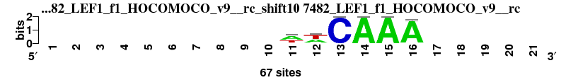

| Matrix name | Aligned logos | cor |
Ncor |
logoDP |
NIcor |
NsEucl |
SSD |
NSW |
rcor |
rNcor |
rlogoDP |
rNIcor |
rNsEucl |
rSSD |
rNSW |
rank_mean |
match_rank |
Aligned matrices |
|---|
| dyads_m3_shift7 (dyads_m3) |
|
|
|
|
|
|
|
|
|
|
|
|
|
|
|
|
|
; dyads_m3; m=0 (reference); ncol1=11; shift=7; ncol=21; -------ymGATCAAAtw---
; Alignment reference
a 0 0 0 0 0 0 0 2 6 0 11 0 0 11 11 11 2 4 0 0 0
c 0 0 0 0 0 0 0 3 3 0 0 0 11 0 0 0 2 1 0 0 0
g 0 0 0 0 0 0 0 2 0 11 0 0 0 0 0 0 0 0 0 0 0
t 0 0 0 0 0 0 0 4 2 0 0 11 0 0 0 0 7 6 0 0 0
|
| 2526_MA0151.1_JASPAR_CORE_2009__shift10 (2526_MA0151.1_JASPAR_CORE_2009_) |
|
0.887 |
0.484 |
8.694 |
0.469 |
0.885 |
0.960 |
0.920 |
5 |
17 |
5 |
9 |
22 |
5 |
7 |
10.000 |
1 |
; dyads_m3 versus 2526_MA0151.1_JASPAR_CORE_2009_; m=1/33; ncol2=6; w=6; offset=3; strand=D; shift=10; score= 10; ----------ATyAAA-----
; cor=0.887; Ncor=0.484; logoDP=8.694; NIcor=0.469; NsEucl=0.885; SSD=0.960; NSW=0.920; rcor=5; rNcor=17; rlogoDP=5; rNIcor=9; rNsEucl=22; rSSD=5; rNSW=7; rank_mean=10.000; match_rank=1
a 0 0 0 0 0 0 0 0 0 0 27 0 1 27 27 20 0 0 0 0 0
c 0 0 0 0 0 0 0 0 0 0 0 0 9 0 0 0 0 0 0 0 0
g 0 0 0 0 0 0 0 0 0 0 0 0 0 0 0 1 0 0 0 0 0
t 0 0 0 0 0 0 0 0 0 0 0 27 17 0 0 6 0 0 0 0 0
|
| 1939_PB0082.1_JASPAR_CORE_2009__shift5 (1939_PB0082.1_JASPAR_CORE_2009_) |
|
0.799 |
0.517 |
8.434 |
0.552 |
0.906 |
2.134 |
0.903 |
16 |
11 |
7 |
6 |
3 |
17 |
10 |
10.000 |
2 |
; dyads_m3 versus 1939_PB0082.1_JASPAR_CORE_2009_; m=2/33; ncol2=17; w=11; offset=-2; strand=D; shift=5; score= 10; -----twwasATCAAAGgrww
; cor=0.799; Ncor=0.517; logoDP=8.434; NIcor=0.552; NsEucl=0.906; SSD=2.134; NSW=0.903; rcor=16; rNcor=11; rlogoDP=7; rNIcor=6; rNsEucl=3; rSSD=17; rNSW=10; rank_mean=10.000; match_rank=2
a 0 0 0 0 0 19 37 25 58 4 76 6 4 96 97 94 13 21 49 40 31
c 0 0 0 0 0 20 23 17 4 40 1 1 87 0 0 0 6 17 13 20 23
g 0 0 0 0 0 18 12 13 13 50 1 0 6 0 1 2 80 48 31 15 16
t 0 0 0 0 0 43 27 45 24 7 23 93 3 3 1 4 2 13 8 25 30
|
| 6733_4euw_A_3D-footprint_20130124__shift11 (6733_4euw_A_3D-footprint_20130124_) |
|
0.883 |
0.481 |
7.280 |
0.491 |
0.890 |
0.877 |
0.927 |
6 |
18 |
12 |
8 |
20 |
4 |
5 |
10.429 |
3 |
; dyads_m3 versus 6733_4euw_A_3D-footprint_20130124_; m=3/33; ncol2=6; w=6; offset=4; strand=D; shift=11; score=10.4286; -----------TcAAAg----
; cor=0.883; Ncor=0.481; logoDP=7.280; NIcor=0.491; NsEucl=0.890; SSD=0.877; NSW=0.927; rcor=6; rNcor=18; rlogoDP=12; rNIcor=8; rNsEucl=20; rSSD=4; rNSW=5; rank_mean=10.429; match_rank=3
a 0 0 0 0 0 0 0 0 0 0 0 0 12 96 84 96 12 0 0 0 0
c 0 0 0 0 0 0 0 0 0 0 0 0 60 0 0 0 12 0 0 0 0
g 0 0 0 0 0 0 0 0 0 0 0 0 12 0 12 0 60 0 0 0 0
t 0 0 0 0 0 0 0 0 0 0 0 96 12 0 0 0 12 0 0 0 0
|
| 5048_ZmHOX2a_2__Athamap_20091028__rc_shift7 (5048_ZmHOX2a_2__Athamap_20091028__rc) |
|
0.940 |
0.598 |
0.123 |
-0.161 |
0.932 |
0.456 |
0.967 |
2 |
4 |
31 |
31 |
1 |
2 |
2 |
10.429 |
4 |
; dyads_m3 versus 5048_ZmHOX2a_2__Athamap_20091028__rc; m=4/33; ncol2=7; w=7; offset=0; strand=R; shift=7; score=10.4286; -------cmGATCa-------
; cor=0.940; Ncor=0.598; logoDP=0.123; NIcor=-0.161; NsEucl=0.932; SSD=0.456; NSW=0.967; rcor=2; rNcor=4; rlogoDP=31; rNIcor=31; rNsEucl=1; rSSD=2; rNSW=2; rank_mean=10.429; match_rank=4
a 0 0 0 0 0 0 0 6 16 0 27 0 0 15 0 0 0 0 0 0 0
c 0 0 0 0 0 0 0 14 7 0 0 0 27 5 0 0 0 0 0 0 0
g 0 0 0 0 0 0 0 4 4 27 0 0 0 2 0 0 0 0 0 0 0
t 0 0 0 0 0 0 0 3 0 0 0 27 0 5 0 0 0 0 0 0 0
|
| 2653_MA0434.1_JASPAR_CORE_2009__shift5 (2653_MA0434.1_JASPAR_CORE_2009_) |
|
0.862 |
0.464 |
6.479 |
0.443 |
0.898 |
1.014 |
0.928 |
9 |
21 |
15 |
10 |
15 |
6 |
4 |
11.429 |
5 |
; dyads_m3 versus 2653_MA0434.1_JASPAR_CORE_2009_; m=5/33; ncol2=9; w=7; offset=-2; strand=D; shift=5; score=11.4286; -----yGymrATCm-------
; cor=0.862; Ncor=0.464; logoDP=6.479; NIcor=0.443; NsEucl=0.898; SSD=1.014; NSW=0.928; rcor=9; rNcor=21; rlogoDP=15; rNIcor=10; rNsEucl=15; rSSD=6; rNSW=4; rank_mean=11.429; match_rank=5
a 0 0 0 0 0 11 0 9 63 40 100 0 0 36 0 0 0 0 0 0 0
c 0 0 0 0 0 36 0 26 26 0 0 0 100 30 0 0 0 0 0 0 0
g 0 0 0 0 0 11 100 0 0 60 0 0 0 17 0 0 0 0 0 0 0
t 0 0 0 0 0 41 0 65 11 0 0 100 0 17 0 0 0 0 0 0 0
|
| 1940_PB0083.1_JASPAR_CORE_2009__shift5 (1940_PB0083.1_JASPAR_CORE_2009_) |
|
0.795 |
0.515 |
7.733 |
0.554 |
0.906 |
2.161 |
0.902 |
18 |
13 |
10 |
4 |
5 |
19 |
12 |
11.571 |
6 |
; dyads_m3 versus 1940_PB0083.1_JASPAR_CORE_2009_; m=6/33; ncol2=17; w=11; offset=-2; strand=D; shift=5; score=11.5714; -----twwasWTCAAAGgrah
; cor=0.795; Ncor=0.515; logoDP=7.733; NIcor=0.554; NsEucl=0.906; SSD=2.161; NSW=0.902; rcor=18; rNcor=13; rlogoDP=10; rNIcor=4; rNsEucl=5; rSSD=19; rNSW=12; rank_mean=11.571; match_rank=6
a 0 0 0 0 0 17 34 30 60 4 73 7 5 96 96 94 16 23 56 49 31
c 0 0 0 0 0 20 23 17 5 38 1 1 82 1 0 1 6 15 12 21 25
g 0 0 0 0 0 22 14 14 13 53 1 0 10 1 2 2 76 52 25 12 13
t 0 0 0 0 0 41 29 38 21 5 26 92 4 3 2 4 2 9 6 17 31
|
| 3755_UP00058_UniPROBE_20120919__shift5 (3755_UP00058_UniPROBE_20120919_) |
|
0.796 |
0.515 |
8.422 |
0.550 |
0.905 |
2.165 |
0.902 |
17 |
12 |
8 |
7 |
6 |
20 |
13 |
11.857 |
7 |
; dyads_m3 versus 3755_UP00058_UniPROBE_20120919_; m=7/33; ncol2=17; w=11; offset=-2; strand=D; shift=5; score=11.8571; -----twwwsATCAAAGgrww
; cor=0.796; Ncor=0.515; logoDP=8.422; NIcor=0.550; NsEucl=0.905; SSD=2.165; NSW=0.902; rcor=17; rNcor=12; rlogoDP=8; rNIcor=7; rNsEucl=6; rSSD=20; rNSW=13; rank_mean=11.857; match_rank=7
a 0 0 0 0 0 19 37 25 58 4 75 0.06 4 0.96 0.97 0.94 12 21 49 40 31
c 0 0 0 0 0 20 23 17 4 40 1 0.01 87 0 0 0 6 17 13 20 23
g 0 0 0 0 0 18 13 13 13 49 1 0 6 0 0.01 0.02 80 49 31 15 16
t 0 0 0 0 0 43 27 45 25 7 23 0.93 3 0.03 0.01 0.04 2 13 7 25 30
|
| 7482_LEF1_f1_HOCOMOCO_v9__rc_shift10 (7482_LEF1_f1_HOCOMOCO_v9__rc) |
 |
0.917 |
0.500 |
2.545 |
0.028 |
0.900 |
0.726 |
0.939 |
3 |
15 |
26 |
26 |
13 |
3 |
3 |
12.714 |
8 |
; dyads_m3 versus 7482_LEF1_f1_HOCOMOCO_v9__rc; m=8/33; ncol2=6; w=6; offset=3; strand=R; shift=10; score=12.7143; ----------wwCAAA-----
; cor=0.917; Ncor=0.500; logoDP=2.545; NIcor=0.028; NsEucl=0.900; SSD=0.726; NSW=0.939; rcor=3; rNcor=15; rlogoDP=26; rNIcor=26; rNsEucl=13; rSSD=3; rNSW=3; rank_mean=12.714; match_rank=8
a 0 0 0 0 0 0 0 0 0 0 38 28 0 67 67 65 0 0 0 0 0
c 0 0 0 0 0 0 0 0 0 0 3 0 67 0 0 0 0 0 0 0 0
g 0 0 0 0 0 0 0 0 0 0 2 4 0 0 0 1 0 0 0 0 0
t 0 0 0 0 0 0 0 0 0 0 24 35 0 0 0 1 0 0 0 0 0
|
| 3751_UP00054_UniPROBE_20120919__shift5 (3751_UP00054_UniPROBE_20120919_) |
|
0.795 |
0.514 |
7.843 |
0.554 |
0.905 |
2.167 |
0.901 |
19 |
14 |
9 |
5 |
7 |
21 |
14 |
12.714 |
9 |
; dyads_m3 versus 3751_UP00054_UniPROBE_20120919_; m=9/33; ncol2=17; w=11; offset=-2; strand=D; shift=5; score=12.7143; -----twwasWTCAAAGgrah
; cor=0.795; Ncor=0.514; logoDP=7.843; NIcor=0.554; NsEucl=0.905; SSD=2.167; NSW=0.901; rcor=19; rNcor=14; rlogoDP=9; rNIcor=5; rNsEucl=7; rSSD=21; rNSW=14; rank_mean=12.714; match_rank=9
a 0 0 0 0 0 17 34 30 60 4 72 0.07 4 96 0.96 93 16 23 56 49 31
c 0 0 0 0 0 20 23 17 5 38 1 0.01 82 1 0 1 6 15 13 22 25
g 0 0 0 0 0 22 14 14 14 53 1 0 10 0 0.02 2 76 53 25 12 13
t 0 0 0 0 0 41 29 39 21 5 26 0.92 4 3 0.02 4 2 9 6 17 31
|
| 1795_MA0237.1_JASPAR_CORE_2009__rc_shift9 (1795_MA0237.1_JASPAR_CORE_2009__rc) |
|
0.888 |
0.646 |
2.118 |
0.068 |
0.897 |
1.360 |
0.915 |
4 |
3 |
27 |
24 |
16 |
9 |
9 |
13.143 |
10 |
; dyads_m3 versus 1795_MA0237.1_JASPAR_CORE_2009__rc; m=10/33; ncol2=8; w=8; offset=2; strand=R; shift=9; score=13.1429; ---------kWTCAAAr----
; cor=0.888; Ncor=0.646; logoDP=2.118; NIcor=0.068; NsEucl=0.897; SSD=1.360; NSW=0.915; rcor=4; rNcor=3; rlogoDP=27; rNIcor=24; rNsEucl=16; rSSD=9; rNSW=9; rank_mean=13.143; match_rank=10
a 0 0 0 0 0 0 0 0 0 4 17 3 3 23 22 20 8 0 0 0 0
c 0 0 0 0 0 0 0 0 0 3 0 5 20 0 1 0 3 0 0 0 0
g 0 0 0 0 0 0 0 0 0 11 0 0 2 0 0 3 10 0 0 0 0
t 0 0 0 0 0 0 0 0 0 7 8 17 0 2 2 2 4 0 0 0 0
|
| 2329_CN0166.1_JASPAR_CORE_2009__shift1 (2329_CN0166.1_JASPAR_CORE_2009_) |
|
0.864 |
0.407 |
8.500 |
0.387 |
0.898 |
1.323 |
0.917 |
7 |
32 |
6 |
18 |
14 |
8 |
8 |
13.286 |
11 |
; dyads_m3 versus 2329_CN0166.1_JASPAR_CORE_2009_; m=11/33; ncol2=14; w=8; offset=-6; strand=D; shift=1; score=13.2857; -CATGCTGAGATCAA------
; cor=0.864; Ncor=0.407; logoDP=8.500; NIcor=0.387; NsEucl=0.898; SSD=1.323; NSW=0.917; rcor=7; rNcor=32; rlogoDP=6; rNIcor=18; rNsEucl=14; rSSD=8; rNSW=8; rank_mean=13.286; match_rank=11
a 0 2 42 2 2 0 0 0 48 1 41 2 3 49 47 0 0 0 0 0 0
c 0 46 5 0 1 49 0 0 0 0 5 2 40 0 0 0 0 0 0 0 0
g 0 0 0 1 45 0 0 49 1 48 0 2 6 0 0 0 0 0 0 0 0
t 0 1 2 46 1 0 49 0 0 0 3 43 0 0 2 0 0 0 0 0 0
|
| 6387_2a07_K_3D-footprint_20130124__rc_shift12 (6387_2a07_K_3D-footprint_20130124__rc) |
|
0.958 |
0.436 |
0.093 |
-0.128 |
0.925 |
0.282 |
0.972 |
1 |
25 |
33 |
30 |
2 |
1 |
1 |
13.286 |
12 |
; dyads_m3 versus 6387_2a07_K_3D-footprint_20130124__rc; m=12/33; ncol2=5; w=5; offset=5; strand=R; shift=12; score=13.2857; ------------CAAat----
; cor=0.958; Ncor=0.436; logoDP=0.093; NIcor=-0.128; NsEucl=0.925; SSD=0.282; NSW=0.972; rcor=1; rNcor=25; rlogoDP=33; rNIcor=30; rNsEucl=2; rSSD=1; rNSW=1; rank_mean=13.286; match_rank=12
a 0 0 0 0 0 0 0 0 0 0 0 0 0 96 96 54 13 0 0 0 0
c 0 0 0 0 0 0 0 0 0 0 0 0 96 0 0 13 16 0 0 0 0
g 0 0 0 0 0 0 0 0 0 0 0 0 0 0 0 13 13 0 0 0 0
t 0 0 0 0 0 0 0 0 0 0 0 0 0 0 0 16 54 0 0 0 0
|
| 3061_FNR_RegulonDB_7.5__shift1 (3061_FNR_RegulonDB_7.5_) |
|
0.863 |
0.406 |
6.313 |
0.409 |
0.903 |
1.216 |
0.924 |
8 |
33 |
16 |
17 |
11 |
7 |
6 |
14.000 |
13 |
; dyads_m3 versus 3061_FNR_RegulonDB_7.5_; m=13/33; ncol2=14; w=8; offset=-6; strand=D; shift=1; score= 14; -tTGaTywayATCAA------
; cor=0.863; Ncor=0.406; logoDP=6.313; NIcor=0.409; NsEucl=0.903; SSD=1.216; NSW=0.924; rcor=8; rNcor=33; rlogoDP=16; rNIcor=17; rNsEucl=11; rSSD=7; rNSW=6; rank_mean=14.000; match_rank=13
a 0 17 5 13 47 10 17 28 48 20 66 4 0 80 73 0 0 0 0 0 0
c 0 8 8 10 14 3 28 10 12 23 0 0 72 1 8 0 0 0 0 0 0
g 0 10 6 58 8 13 3 16 11 11 11 0 5 0 0 0 0 0 0 0 0
t 0 48 64 2 14 57 35 29 12 29 6 79 6 2 2 0 0 0 0 0 0
|
| 5494_LEF1_DBD_HumanTF_1.0__shift6 (5494_LEF1_DBD_HumanTF_1.0_) |
|
0.777 |
0.570 |
11.529 |
0.608 |
0.894 |
2.736 |
0.876 |
21 |
5 |
1 |
3 |
17 |
29 |
23 |
14.143 |
14 |
; dyads_m3 versus 5494_LEF1_DBD_HumanTF_1.0_; m=14/33; ncol2=15; w=11; offset=-1; strand=D; shift=6; score=14.1429; ------aAAGATCAAAGgrww
; cor=0.777; Ncor=0.570; logoDP=11.529; NIcor=0.608; NsEucl=0.894; SSD=2.736; NSW=0.876; rcor=21; rNcor=5; rlogoDP=1; rNIcor=3; rNsEucl=17; rSSD=29; rNSW=23; rank_mean=14.143; match_rank=14
a 0 0 0 0 0 0 601 655 697 5 699 9 14 711 709 712 33 197 309 367 366
c 0 0 0 0 0 0 139 26 7 242 0 3 935 0 0 0 24 184 164 63 95
g 0 0 0 0 0 0 215 207 34 1053 4 0 49 0 4 13 1068 851 559 88 77
t 0 0 0 0 0 0 138 63 14 3 15 898 5 4 0 4 0 124 121 372 422
|
| 3780_UP00083_UniPROBE_20120919__rc_shift5 (3780_UP00083_UniPROBE_20120919__rc) |
|
0.803 |
0.520 |
3.634 |
0.097 |
0.906 |
2.152 |
0.902 |
14 |
9 |
23 |
21 |
4 |
18 |
11 |
14.286 |
15 |
; dyads_m3 versus 3780_UP00083_UniPROBE_20120919__rc; m=15/33; ncol2=17; w=11; offset=-2; strand=R; shift=5; score=14.2857; -----tawasATCAAAGgrmh
; cor=0.803; Ncor=0.520; logoDP=3.634; NIcor=0.097; NsEucl=0.906; SSD=2.152; NSW=0.902; rcor=14; rNcor=9; rlogoDP=23; rNIcor=21; rNsEucl=4; rSSD=18; rNSW=11; rank_mean=14.286; match_rank=15
a 0 0 0 0 0 17 39 25 59 4 0.89 0.05 3 0.97 0.98 0.96 7 20 44 35 31
c 0 0 0 0 0 23 24 22 4 35 0 0 93 0 0 0 3 18 15 25 26
g 0 0 0 0 0 24 14 17 15 57 0 0 3 0 0.01 0.02 88 53 33 16 15
t 0 0 0 0 0 36 23 36 22 4 0.11 0.95 1 0.03 0.01 0.02 2 9 8 24 28
|
| 5900_Tcf7_DBD_HumanTF_1.0__shift6 (5900_Tcf7_DBD_HumanTF_1.0_) |
|
0.766 |
0.702 |
11.009 |
0.742 |
0.891 |
2.849 |
0.870 |
24 |
1 |
2 |
1 |
19 |
31 |
27 |
15.000 |
16 |
; dyads_m3 versus 5900_Tcf7_DBD_HumanTF_1.0_; m=16/33; ncol2=12; w=11; offset=-1; strand=D; shift=6; score= 15; ------aAASATCAAAGg---
; cor=0.766; Ncor=0.702; logoDP=11.009; NIcor=0.742; NsEucl=0.891; SSD=2.849; NSW=0.870; rcor=24; rNcor=1; rlogoDP=2; rNIcor=1; rNsEucl=19; rSSD=31; rNSW=27; rank_mean=15.000; match_rank=16
a 0 0 0 0 0 0 552 791 906 5 912 0 21 919 921 915 32 159 0 0 0
c 0 0 0 0 0 0 68 31 4 277 2 5 1018 0 6 0 0 146 0 0 0
g 0 0 0 0 0 0 117 144 27 744 4 18 28 5 10 0 846 600 0 0 0
t 0 0 0 0 0 0 97 111 31 6 42 874 21 6 3 4 0 89 0 0 0
|
| 3764_UP00067_UniPROBE_20120919__rc_shift5 (3764_UP00067_UniPROBE_20120919__rc) |
|
0.805 |
0.521 |
3.757 |
0.094 |
0.905 |
2.176 |
0.901 |
12 |
7 |
22 |
22 |
9 |
23 |
16 |
15.857 |
17 |
; dyads_m3 versus 3764_UP00067_UniPROBE_20120919__rc; m=17/33; ncol2=17; w=11; offset=-2; strand=R; shift=5; score=15.8571; -----kwwasATCAAAGgrwy
; cor=0.805; Ncor=0.521; logoDP=3.757; NIcor=0.094; NsEucl=0.905; SSD=2.176; NSW=0.901; rcor=12; rNcor=7; rlogoDP=22; rNIcor=22; rNsEucl=9; rSSD=23; rNSW=16; rank_mean=15.857; match_rank=17
a 0 0 0 0 0 19 40 26 62 2 0.92 0.03 2 0.97 0.99 0.97 5 17 38 32 22
c 0 0 0 0 0 22 17 22 6 28 0 0 95 0 0 0 4 14 14 24 30
g 0 0 0 0 0 34 15 17 12 67 0 0 3 0 0.01 0.02 90 62 40 15 15
t 0 0 0 0 0 25 28 35 20 3 0.08 0.97 0 0.02 0.01 0.02 1 7 8 29 33
|
| 2684_PB0084.1_JASPAR_CORE_2009__rc_shift5 (2684_PB0084.1_JASPAR_CORE_2009__rc) |
|
0.801 |
0.518 |
3.622 |
0.097 |
0.905 |
2.175 |
0.901 |
15 |
10 |
24 |
20 |
8 |
22 |
15 |
16.286 |
18 |
; dyads_m3 versus 2684_PB0084.1_JASPAR_CORE_2009__rc; m=18/33; ncol2=17; w=11; offset=-2; strand=R; shift=5; score=16.2857; -----tawasATCAAAGgrmh
; cor=0.801; Ncor=0.518; logoDP=3.622; NIcor=0.097; NsEucl=0.905; SSD=2.175; NSW=0.901; rcor=15; rNcor=10; rlogoDP=24; rNIcor=20; rNsEucl=8; rSSD=22; rNSW=15; rank_mean=16.286; match_rank=18
a 0 0 0 0 0 17 39 25 59 3 89 5 3 97 98 96 7 20 44 35 31
c 0 0 0 0 0 23 23 22 4 35 0 0 93 0 0 0 3 18 15 25 26
g 0 0 0 0 0 24 14 17 14 57 0 0 3 0 1 2 88 53 33 16 16
t 0 0 0 0 0 35 23 36 22 4 11 95 1 3 1 2 1 9 8 24 28
|
| 1904_PB0040.1_JASPAR_CORE_2009__rc_shift5 (1904_PB0040.1_JASPAR_CORE_2009__rc) |
|
0.805 |
0.521 |
3.773 |
0.092 |
0.905 |
2.177 |
0.901 |
13 |
8 |
21 |
23 |
10 |
24 |
17 |
16.571 |
19 |
; dyads_m3 versus 1904_PB0040.1_JASPAR_CORE_2009__rc; m=19/33; ncol2=17; w=11; offset=-2; strand=R; shift=5; score=16.5714; -----kwwasATCAAAGgrwy
; cor=0.805; Ncor=0.521; logoDP=3.773; NIcor=0.092; NsEucl=0.905; SSD=2.177; NSW=0.901; rcor=13; rNcor=8; rlogoDP=21; rNIcor=23; rNsEucl=10; rSSD=24; rNSW=17; rank_mean=16.571; match_rank=19
a 0 0 0 0 0 19 40 27 62 2 92 3 2 97 99 97 5 17 38 32 22
c 0 0 0 0 0 22 17 22 6 28 0 0 95 0 0 0 4 14 14 24 30
g 0 0 0 0 0 34 15 17 12 68 0 0 3 0 1 2 91 62 40 15 15
t 0 0 0 0 0 25 28 35 20 3 8 97 1 2 1 2 1 7 7 29 33
|
| 5863_TCF7L1_full_HumanTF_1.0__shift6 (5863_TCF7L1_full_HumanTF_1.0_) |
|
0.750 |
0.688 |
10.294 |
0.720 |
0.888 |
3.015 |
0.863 |
33 |
2 |
3 |
2 |
21 |
33 |
28 |
17.429 |
20 |
; dyads_m3 versus 5863_TCF7L1_full_HumanTF_1.0_; m=20/33; ncol2=12; w=11; offset=-1; strand=D; shift=6; score=17.4286; ------AAAGATCAAAGG---
; cor=0.750; Ncor=0.688; logoDP=10.294; NIcor=0.720; NsEucl=0.888; SSD=3.015; NSW=0.863; rcor=33; rNcor=2; rlogoDP=3; rNIcor=2; rNsEucl=21; rSSD=33; rNSW=28; rank_mean=17.429; match_rank=20
a 0 0 0 0 0 0 109 159 159 0 159 0 5 159 159 159 0 28 0 0 0
c 0 0 0 0 0 0 20 7 0 33 9 6 159 2 0 0 9 9 0 0 0
g 0 0 0 0 0 0 6 30 0 126 13 9 0 1 0 2 159 113 0 0 0
t 0 0 0 0 0 0 24 7 5 6 18 159 0 0 0 0 5 9 0 0 0
|
| 6753_6gat_A_3D-footprint_20130124__shift8 (6753_6gat_A_3D-footprint_20130124_) |
|
0.805 |
0.439 |
4.748 |
0.415 |
0.862 |
1.377 |
0.885 |
11 |
24 |
18 |
16 |
29 |
10 |
20 |
18.286 |
21 |
; dyads_m3 versus 6753_6gat_A_3D-footprint_20130124_; m=21/33; ncol2=6; w=6; offset=1; strand=D; shift=8; score=18.2857; --------CnATCA-------
; cor=0.805; Ncor=0.439; logoDP=4.748; NIcor=0.415; NsEucl=0.862; SSD=1.377; NSW=0.885; rcor=11; rNcor=24; rlogoDP=18; rNIcor=16; rNsEucl=29; rSSD=10; rNSW=20; rank_mean=18.286; match_rank=21
a 0 0 0 0 0 0 0 0 11 24 67 9 0 96 0 0 0 0 0 0 0
c 0 0 0 0 0 0 0 0 67 24 9 11 96 0 0 0 0 0 0 0 0
g 0 0 0 0 0 0 0 0 9 24 11 9 0 0 0 0 0 0 0 0 0
t 0 0 0 0 0 0 0 0 9 24 9 67 0 0 0 0 0 0 0 0 0
|
| 7299_ARI3A_do_HOCOMOCO_v9__shift0 (7299_ARI3A_do_HOCOMOCO_v9_) |
|
0.781 |
0.409 |
4.796 |
0.423 |
0.902 |
2.309 |
0.895 |
20 |
31 |
17 |
14 |
12 |
25 |
18 |
19.571 |
22 |
; dyads_m3 versus 7299_ARI3A_do_HOCOMOCO_v9_; m=22/33; ncol2=21; w=11; offset=-7; strand=D; shift=0; score=19.5714; ATTAAwyrrwATcWAAwtwww
; cor=0.781; Ncor=0.409; logoDP=4.796; NIcor=0.423; NsEucl=0.902; SSD=2.309; NSW=0.895; rcor=20; rNcor=31; rlogoDP=17; rNIcor=14; rNsEucl=12; rSSD=25; rNSW=18; rank_mean=19.571; match_rank=22
a 30 5 7 42 41 21 0 13 22 20 32 6 7 32 33 42 18 5 23 27 29
c 4 0 0 2 3 0 18 8 2 2 0 2 25 0 2 0 0 6 6 3 1
g 0 0 0 0 0 1 10 19 16 7 4 4 2 0 0 0 2 4 1 0 3
t 10 39 37 0 0 22 16 4 4 15 8 32 10 12 9 2 24 29 14 14 11
|
| 7300_ARI3A_f1_HOCOMOCO_v9__shift10 (7300_ARI3A_f1_HOCOMOCO_v9_) |
|
0.764 |
0.417 |
8.757 |
0.415 |
0.831 |
2.058 |
0.829 |
26 |
28 |
4 |
15 |
33 |
15 |
33 |
22.000 |
23 |
; dyads_m3 versus 7300_ARI3A_f1_HOCOMOCO_v9_; m=23/33; ncol2=6; w=6; offset=3; strand=D; shift=10; score= 22; ----------ATTAAA-----
; cor=0.764; Ncor=0.417; logoDP=8.757; NIcor=0.415; NsEucl=0.831; SSD=2.058; NSW=0.829; rcor=26; rNcor=28; rlogoDP=4; rNIcor=15; rNsEucl=33; rSSD=15; rNSW=33; rank_mean=22.000; match_rank=23
a 0 0 0 0 0 0 0 0 0 0 47 0 0 47 47 39 0 0 0 0 0
c 0 0 0 0 0 0 0 0 0 0 0 0 0 0 0 0 0 0 0 0 0
g 0 0 0 0 0 0 0 0 0 0 0 0 0 0 0 0 0 0 0 0 0
t 0 0 0 0 0 0 0 0 0 0 0 47 47 0 0 8 0 0 0 0 0
|
| 3893_UP00198_UniPROBE_20120919__shift2 (3893_UP00198_UniPROBE_20120919_) |
|
0.758 |
0.426 |
6.826 |
0.431 |
0.881 |
2.313 |
0.871 |
30 |
26 |
13 |
12 |
23 |
26 |
25 |
22.143 |
24 |
; dyads_m3 versus 3893_UP00198_UniPROBE_20120919_; m=24/33; ncol2=14; w=9; offset=-5; strand=D; shift=2; score=22.1429; --rTGATssmATCAaw-----
; cor=0.758; Ncor=0.426; logoDP=6.826; NIcor=0.431; NsEucl=0.881; SSD=2.313; NSW=0.871; rcor=30; rNcor=26; rlogoDP=13; rNIcor=12; rNsEucl=23; rSSD=26; rNSW=25; rank_mean=22.143; match_rank=24
a 0 0 34 0.03 4 98 0.04 10 22 54 95 0.01 0 95 61 36 0 0 0 0 0
c 0 0 18 0 2 1 0 37 28 34 3 0.01 0.97 1 14 21 0 0 0 0 0
g 0 0 26 0 93 1 0.06 29 35 8 1 0 0 1 15 10 0 0 0 0 0
t 0 0 22 0.96 1 0 0.90 24 15 4 1 0.99 0.02 3 10 33 0 0 0 0 0
|
| 2872_PH0014.1_JASPAR_CORE_2009__shift2 (2872_PH0014.1_JASPAR_CORE_2009_) |
|
0.758 |
0.426 |
6.826 |
0.431 |
0.881 |
2.313 |
0.871 |
30 |
26 |
13 |
12 |
23 |
26 |
25 |
22.143 |
25 |
; dyads_m3 versus 2872_PH0014.1_JASPAR_CORE_2009_; m=25/33; ncol2=14; w=9; offset=-5; strand=D; shift=2; score=22.1429; --rTGATssmATCAaw-----
; cor=0.758; Ncor=0.426; logoDP=6.826; NIcor=0.431; NsEucl=0.881; SSD=2.313; NSW=0.871; rcor=30; rNcor=26; rlogoDP=13; rNIcor=12; rNsEucl=23; rSSD=26; rNSW=25; rank_mean=22.143; match_rank=25
a 0 0 34 3 4 98 4 10 22 54 95 1 0 95 61 36 0 0 0 0 0
c 0 0 18 0 2 1 0 37 28 34 3 1 97 1 14 21 0 0 0 0 0
g 0 0 26 0 93 1 6 29 35 8 1 0 0 1 15 10 0 0 0 0 0
t 0 0 22 96 1 1 90 24 15 4 1 99 2 3 10 33 0 0 0 0 0
|
| 7604_RARG_f1_HOCOMOCO_v9__shift8 (7604_RARG_f1_HOCOMOCO_v9_) |
|
0.759 |
0.414 |
7.379 |
0.439 |
0.841 |
1.822 |
0.848 |
29 |
30 |
11 |
11 |
32 |
14 |
31 |
22.571 |
26 |
; dyads_m3 versus 7604_RARG_f1_HOCOMOCO_v9_; m=26/33; ncol2=6; w=6; offset=1; strand=D; shift=8; score=22.5714; --------AGKTCA-------
; cor=0.759; Ncor=0.414; logoDP=7.379; NIcor=0.439; NsEucl=0.841; SSD=1.822; NSW=0.848; rcor=29; rNcor=30; rlogoDP=11; rNIcor=11; rNsEucl=32; rSSD=14; rNSW=31; rank_mean=22.571; match_rank=26
a 0 0 0 0 0 0 0 0 23 0 0 0 0 27 0 0 0 0 0 0 0
c 0 0 0 0 0 0 0 0 0 0 0 0 29 2 0 0 0 0 0 0 0
g 0 0 0 0 0 0 0 0 6 29 21 0 0 0 0 0 0 0 0 0 0
t 0 0 0 0 0 0 0 0 0 0 8 29 0 0 0 0 0 0 0 0 0
|
| 2255_CN0092.1_JASPAR_CORE_2009__rc_shift2 (2255_CN0092.1_JASPAR_CORE_2009__rc) |
|
0.761 |
0.465 |
4.160 |
0.101 |
0.894 |
2.744 |
0.875 |
28 |
20 |
20 |
19 |
18 |
30 |
24 |
22.714 |
27 |
; dyads_m3 versus 2255_CN0092.1_JASPAR_CORE_2009__rc; m=27/33; ncol2=18; w=11; offset=-5; strand=R; shift=2; score=22.7143; --TCTGcCAAATCAAATTAG-
; cor=0.761; Ncor=0.465; logoDP=4.160; NIcor=0.101; NsEucl=0.894; SSD=2.744; NSW=0.875; rcor=28; rNcor=20; rlogoDP=20; rNIcor=19; rNsEucl=18; rSSD=30; rNSW=24; rank_mean=22.714; match_rank=27
a 0 0 1 5 7 0 11 6 56 53 61 9 1 58 52 60 1 3 64 7 0
c 0 0 0 53 0 3 39 57 1 4 0 0 59 5 5 1 1 9 0 1 0
g 0 0 7 2 0 62 6 1 0 4 3 6 0 0 5 1 0 4 0 55 0
t 0 0 57 5 58 0 9 1 8 4 1 50 5 2 3 3 63 49 1 2 0
|
| 2760_PF0073.1_JASPAR_CORE_2009__rc_shift11 (2760_PF0073.1_JASPAR_CORE_2009__rc) |
|
0.828 |
0.452 |
0.121 |
-0.177 |
0.857 |
1.471 |
0.877 |
10 |
23 |
32 |
32 |
30 |
11 |
22 |
22.857 |
28 |
; dyads_m3 versus 2760_PF0073.1_JASPAR_CORE_2009__rc; m=28/33; ncol2=6; w=6; offset=4; strand=R; shift=11; score=22.8571; -----------TCAAAG----
; cor=0.828; Ncor=0.452; logoDP=0.121; NIcor=-0.177; NsEucl=0.857; SSD=1.471; NSW=0.877; rcor=10; rNcor=23; rlogoDP=32; rNIcor=32; rNsEucl=30; rSSD=11; rNSW=22; rank_mean=22.857; match_rank=28
a 0 0 0 0 0 0 0 0 0 0 0 0 0 4260 4260 4260 0 0 0 0 0
c 0 0 0 0 0 0 0 0 0 0 0 0 4260 0 0 0 0 0 0 0 0
g 0 0 0 0 0 0 0 0 0 0 0 0 0 0 0 0 4260 0 0 0 0
t 0 0 0 0 0 0 0 0 0 0 0 4260 0 0 0 0 0 0 0 0 0
|
| 2619_MA0389.1_JASPAR_CORE_2009__rc_shift6 (2619_MA0389.1_JASPAR_CORE_2009__rc) |
 |
0.776 |
0.452 |
1.017 |
0.016 |
0.871 |
1.621 |
0.884 |
22 |
22 |
28 |
27 |
27 |
13 |
21 |
22.857 |
29 |
; dyads_m3 versus 2619_MA0389.1_JASPAR_CORE_2009__rc; m=29/33; ncol2=8; w=7; offset=-1; strand=R; shift=6; score=22.8571; ------gkAGATCt-------
; cor=0.776; Ncor=0.452; logoDP=1.017; NIcor=0.016; NsEucl=0.871; SSD=1.621; NSW=0.884; rcor=22; rNcor=22; rlogoDP=28; rNIcor=27; rNsEucl=27; rSSD=13; rNSW=21; rank_mean=22.857; match_rank=29
a 0 0 0 0 0 0 16 11 74 0 85 3 2 6 0 0 0 0 0 0 0
c 0 0 0 0 0 0 18 13 3 0 2 0 90 19 0 0 0 0 0 0 0
g 0 0 0 0 0 0 42 30 19 99 0 0 2 9 0 0 0 0 0 0 0
t 0 0 0 0 0 0 24 46 4 0 13 97 6 66 0 0 0 0 0 0 0
|
| 2559_MA0301.1_JASPAR_CORE_2009__rc_shift5 (2559_MA0301.1_JASPAR_CORE_2009__rc) |
|
0.773 |
0.416 |
0.195 |
-0.115 |
0.872 |
1.606 |
0.885 |
23 |
29 |
30 |
29 |
26 |
12 |
19 |
24.000 |
30 |
; dyads_m3 versus 2559_MA0301.1_JASPAR_CORE_2009__rc; m=30/33; ncol2=9; w=7; offset=-2; strand=R; shift=5; score= 24; -----kktrGATCt-------
; cor=0.773; Ncor=0.416; logoDP=0.195; NIcor=-0.115; NsEucl=0.872; SSD=1.606; NSW=0.885; rcor=23; rNcor=29; rlogoDP=30; rNIcor=29; rNsEucl=26; rSSD=12; rNSW=19; rank_mean=24.000; match_rank=30
a 0 0 0 0 0 21 17 12 63 2 87 8 1 6 0 0 0 0 0 0 0
c 0 0 0 0 0 21 21 18 4 1 1 0 88 20 0 0 0 0 0 0 0
g 0 0 0 0 0 25 33 19 27 94 0 0 2 9 0 0 0 0 0 0 0
t 0 0 0 0 0 32 28 51 6 3 12 92 8 65 0 0 0 0 0 0 0
|
| 1838_MA0326.1_JASPAR_CORE_2009__rc_shift8 (1838_MA0326.1_JASPAR_CORE_2009__rc) |
|
0.764 |
0.555 |
2.550 |
-0.043 |
0.862 |
2.447 |
0.847 |
27 |
6 |
25 |
28 |
28 |
28 |
32 |
24.857 |
31 |
; dyads_m3 versus 1838_MA0326.1_JASPAR_CORE_2009__rc; m=31/33; ncol2=8; w=8; offset=1; strand=R; shift=8; score=24.8571; --------yGAGCAAA-----
; cor=0.764; Ncor=0.555; logoDP=2.550; NIcor=-0.043; NsEucl=0.862; SSD=2.447; NSW=0.847; rcor=27; rNcor=6; rlogoDP=25; rNIcor=28; rNsEucl=28; rSSD=28; rNSW=32; rank_mean=24.857; match_rank=31
a 0 0 0 0 0 0 0 0 113 0 1714 0 0 1714 1451 1632 0 0 0 0 0
c 0 0 0 0 0 0 0 0 655 0 0 0 1599 0 219 0 0 0 0 0 0
g 0 0 0 0 0 0 0 0 0 1714 0 1714 0 0 0 0 0 0 0 0 0
t 0 0 0 0 0 0 0 0 958 0 0 0 115 0 89 108 0 0 0 0 0
|
| 1793_MA0235.1_JASPAR_CORE_2009__rc_shift8 (1793_MA0235.1_JASPAR_CORE_2009__rc) |
|
0.764 |
0.486 |
0.204 |
-0.181 |
0.853 |
2.106 |
0.850 |
25 |
16 |
29 |
33 |
31 |
16 |
30 |
25.714 |
32 |
; dyads_m3 versus 1793_MA0235.1_JASPAR_CORE_2009__rc; m=32/33; ncol2=7; w=7; offset=1; strand=R; shift=8; score=25.7143; --------hAATCAA------
; cor=0.764; Ncor=0.486; logoDP=0.204; NIcor=-0.181; NsEucl=0.853; SSD=2.106; NSW=0.850; rcor=25; rNcor=16; rlogoDP=29; rNIcor=33; rNsEucl=31; rSSD=16; rNSW=30; rank_mean=25.714; match_rank=32
a 0 0 0 0 0 0 0 0 6 15 15 0 0 15 12 0 0 0 0 0 0
c 0 0 0 0 0 0 0 0 4 0 0 0 15 0 0 0 0 0 0 0 0
g 0 0 0 0 0 0 0 0 0 0 0 0 0 0 2 0 0 0 0 0 0
t 0 0 0 0 0 0 0 0 5 0 0 15 0 0 1 0 0 0 0 0 0
|
| 2350_CN0187.1_JASPAR_CORE_2009__rc_shift2 (2350_CN0187.1_JASPAR_CORE_2009__rc) |
 |
0.755 |
0.472 |
4.329 |
0.067 |
0.879 |
2.929 |
0.854 |
32 |
19 |
19 |
25 |
25 |
32 |
29 |
25.857 |
33 |
; dyads_m3 versus 2350_CN0187.1_JASPAR_CORE_2009__rc; m=33/33; ncol2=15; w=10; offset=-5; strand=R; shift=2; score=25.8571; --AATGAAAGAwCAAAG----
; cor=0.755; Ncor=0.472; logoDP=4.329; NIcor=0.067; NsEucl=0.879; SSD=2.929; NSW=0.854; rcor=32; rNcor=19; rlogoDP=19; rNIcor=25; rNsEucl=25; rSSD=32; rNSW=29; rank_mean=25.857; match_rank=33
a 0 0 47 48 0 4 40 47 47 0 44 18 0 48 46 47 0 0 0 0 0
c 0 0 0 0 0 3 2 0 0 1 0 0 41 0 2 0 1 0 0 0 0
g 0 0 1 0 0 41 5 1 0 46 1 1 2 0 0 1 47 0 0 0 0
t 0 0 0 0 48 0 1 0 1 1 3 29 5 0 0 0 0 0 0 0 0
|
{kind=link}
{kind=link}
{kind=link}
{kind=link}
{kind=link}
{kind=link}
{kind=link}
{kind=link}
{kind=link}
{kind=link}
{kind=link}
{kind=link}
{kind=link}
{kind=link}
{kind=link}
{kind=link}
{kind=link}
{kind=link}
{kind=link}
{kind=link}
{kind=link}
{kind=link}
{kind=link}
{kind=link}
{kind=link}
{kind=link}
{kind=link}
{kind=link}
{kind=link}
{kind=link}
{kind=link}
{kind=link}